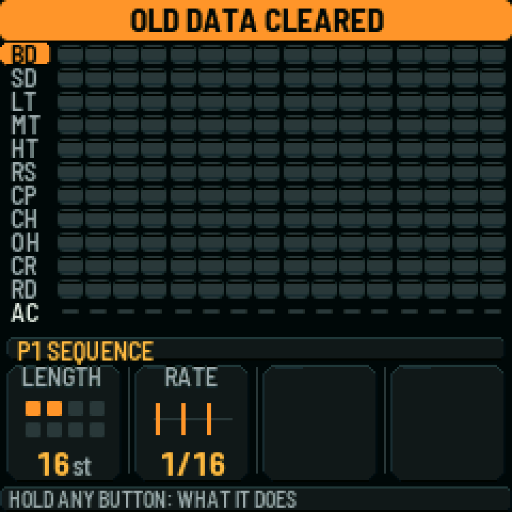
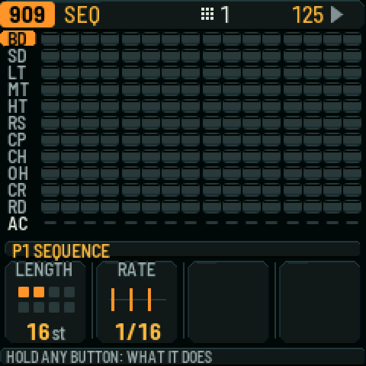
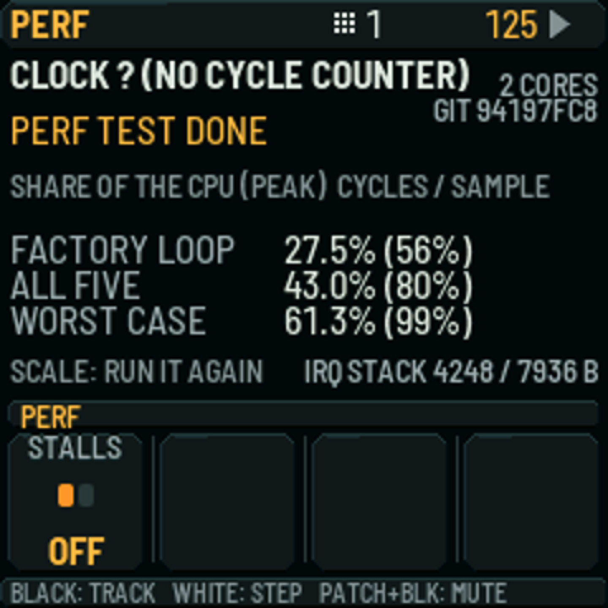

Play a first pattern
A five-minute path from a first start to a kick, a bass line, and a save — then how to keep the work and take it to a set.
If the firmware is not on the keyboard yet, install first.
What you should see after a first start
The published playing manual (section 2, “Getting started”) says: when the firmware starts, the screen shows the 909 and every part is empty. On a first install the SMK-37 note in SMK37.md also says the first start clears the stock firmware’s settings in the shared data area. The pictures are emulator captures, not hardware.


Five-minute tour
Musical steps are from the production manual, section 2. On the SMK-37, SEQ PLAY is PLAY, BT is SAVE, PATCH is HOME, K3 is ALGORITHM, PARA is EDIT, K5–K8 are KNOB 1–4, and SEQ REC is REC (SMK37.md).
- Pick the bass drum and write kicks on the beats, then press SEQ PLAY. The manual’s FM-1 wording is “black key 1” for the bass drum, then white keys 1, 5, 9 and 13. UNVERIFIED on the SMK-37: which exact key is the bass drum. The manual’s tour was written for the FM-1. The nightly SMK manual says older documentation may describe a different control layout.
- Add a clap, then open hats, while the pattern plays. The manual says that picking a drum is silent while the pattern plays, so you do not add a stray hit (unless KEY SOUND is set otherwise, section 15).
- Write a bass line. Turn ALGORITHM (K3) to the 303-style part — the published manual says 303A; the current preset format calls that engine Chicago — and press ARP. Press OCT+: each press writes a new line. Keep going until you like one. Miami is a different engine and is not a 303. Do not call it one. See the engines.
- Shape the filter: press PARA (EDIT). KNOB 1 opens and closes the filter; KNOB 2 sets the resonance (manual §2).
- Add the break: turn ALGORITHM to BREAK and press the sixteen white keys so the break plays the whole bar (manual §2).
- Mute a part: press PATCH (HOME), then the mute for that part. The manual’s FM-1 wording is “black key 5” to mute the break. UNVERIFIED on the SMK-37: which exact key is that mute. SMK37.md says pads and keys play, and PATCH is HOME, but does not restated this mute key.
- Record a filter sweep: back to the 303-style part, EDIT, press SEQ REC, turn KNOB 1 for a bar or two, press REC again (manual §2).
- Stop with SEQ PLAY, then save with BT (SAVE). Everything is kept when you switch off. The firmware also saves by itself a few seconds after you stop, if AUTOSAVE is on (manual §2 and §15).
Next in the manual: section 9 for more patterns, section 12 for arranging them into a song.
Saving
From the production manual, section 15. This is what “save” means on the instrument, not a website account.
- SAVE stores the sounds, all 32 patterns, the song, the knob motion, the tempo and the settings.
- AUTOSAVE is on by default. After you stop and leave the controls for four seconds, it saves and says AUTOSAVED. Turn REC off for autosave.
- It never saves while the pattern plays. SAVE then says SAVES WHEN STOPPED, and it saves when you stop.
- If a save fails, the header says SAVE FAILED. The previous save is kept. If the project is too large: MEMORY FULL: NOT SAVED; clearing unused patterns makes room.
- You lose unsaved changes when you switch off. Hold SAVE to see the current save state.
The engines
Names below are only those a cited source supports. The nightly SMK manual says the full playing manual is still being reconciled with the current build.
| Name | What the sources say |
|---|---|
| 909 | In the published playing manual (§2, §5) and the production README. Confirmed on the emulator LCD used above (“909 SEQ”). |
| 808 | In the published playing manual (§5) and the production README. Eleven tracks, including the 808’s alternative instrument switches. |
| Break | In the published playing manual (§8) and the production README. A loop cut into slices and rearranged as it plays. Your own loops go in the sample slots; back those up before an install. |
| Chicago | The 303-style engine in the current preset format (DNPR research R1; format plan: “Chicago is the 303-style engine”). The published playing manual and README still say 303A / “303 A and B.” This page uses both, and does not pretend the published manual already says Chicago. |
| Miami | A preset-format engine (DNPR research R1). The format plan states: Miami is not a 303 and must never be called 303 or 303B. It does not appear in the published playing manual. There is no tour for it on this page. |
| Juno, Drone | Preset-format engine identities (research R1; format plan ids 3 and 4). Not in the published playing manual or the READMEs. How to play them on the SMK-37 is UNVERIFIED. This page does not invent a tour. |
Get ready to play live
From the production README and the playing manual, sections 15 and 16.
- Over USB the keyboard is a MIDI device and an audio interface, with no driver needed (production README).
- In GLO: CLOCK OUT and NOTES OUT if you are driving or feeding a host; USB AUDIO FOLLOWS KNOB (default) or FULL if you want to record over the cable with the speaker down (manual §15).
- SAVE still will not run while the pattern plays. On stage, press SAVE so it is armed, then stop when you can; it says SAVES WHEN STOPPED (manual §15). In clip mode it can also wait until the controls are quiet.
- If a pattern is very busy, the firmware trades a little sound quality to keep playing rather than drop out (production README, “Hardware test status”). GLO > PERFORMANCE shows the load. GUARD means that lightening is happening (manual §15).

Bluetooth MIDI, and clip mode as an Akai APC40 mkII for Loopy Pro, are described in the production README as experimental and not hardware-verified. Bluetooth also needs a matching controller image that cannot be shipped with the public packages. They are not offered as features of a live set on this page.